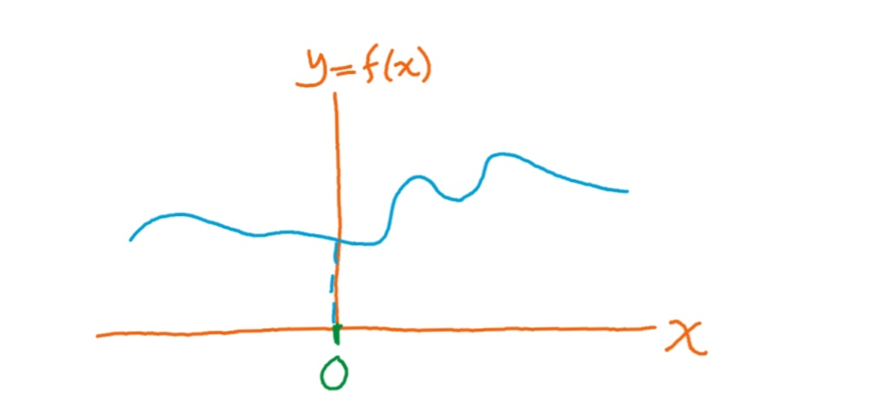

-
Home (current)
-
Fisika
-
Matematika
-
Computer Science
-
Javascript Project
-
Contact Me
-
Terms of Use
Maclaurin Series In A Nutshell
oleh : Fikri Mulyana Setiawan
31 Desember 2020

Saat berada di bangku SMA, tentunya anda pernah belajar tentang deret geometri, seperti 1,2,4,8,16,32,... . jika deret tersebut berlanjut sampai tak hingga, anda mengetahui bahwa jumlah nilai total semua suku sama dengan $S_n = \frac{a}{(1-r)}$.
tapi bagaimana caranya kita bisa memnentuk kembali deret tersebut dari formula $S_n = \frac{a}{(1-r)}$? ya, kita punya deret maclaurin / maclaurin series untuk menangani hal itu. apa itu deret maclaurin , dan bagaimana cara kerjanya?
deret maclaurin adalah deret yang pada dasarnya merupakan kasus khusus dari Taylor Series di titik x=0. secara umum, kegunaan dari deret maclaurin adalah untuk membentuk persamaan dari kurva yang belum diketahui persamaannya dengan bermodalkan karakteristik dari kurva tersebut. karakteristik yang dimaksud adalah seberapa cepat sebuah titik di kurva itu berubah/gradient kurva di titik tersebut (=turunan pertama kurva tersebut),lalu seberapa cepat perubahan gradient kurva tersebut berubah (bisa diperoleh dari turunan kedua kurva tersebut), dan seterusnya.
lebih jelasnya seperti ini:

misalkan anda memiliki kurva seperti gambar di atas. kurva di atas kita anggap terbentuk dari fungsi f(x). lalu kita ingin mencari tau formula untuk f(x) tersebut. misalkan formula yang kita dapatkan adalah p(x). jika kita ingin curva p(x) yang kita dapatkan dan kita ketahui formulanya memiliki bentuk yang sama dengan kurva f(x),tentu saja kita harus bisa menunjukkan bahwa kurva f(x) dan kurva p(x) memiliki karakteristik yang sama. maksudnya adalah jika kita ingin kurva p(x)=f(x), maka seharusnya:
$f(0)=p(0), f'(0)=p'(0), f"(0)=p"(0), f^{(3)}(0)=p^{(3)}(0)$ dan seterusnya
jika kita ingin semua syarat di atas terpenuhi, maka formula yang mungkin untuk mengekspresikan f(x) adalah :
$f(x)=f(0)+f'(0)x+\frac{f"(0)}{2!}x^2 +\frac{f^{(3)}(0)}{3!}x^3 +\frac{f^{(4)}(0)}{4!}x^4+...$
untuk penjelasan lebih lanjut, silakan lihat video dari khan academy ini.
Persamaan yang mengagumkan
sekarang, dengan formula di atas, kita bisa mengetahui deret maclaurin untuk sin(x), cos(x) dan $e^x$.jika anda melakukan proses diferensiasi dengan benar, anda akan mengetahui bahwa:
$sin(x)=x-\frac{1}{3!}x^3+\frac{1}{5!}x^5 -\frac{1}{7!}x^7+...$
$cos(x)=1-\frac{1}{2!}x^2+\frac{1}{4!}x^4 -\frac{1}{6!}x^6+...$
$e^x=1+x+\frac{1}{2!}x^2+\frac{1}{3!}x^3+\frac{1}{4!}x^4+\frac{1}{5!}x^5+...$
mulai dari sini, kita akan melakukan sedikit manipulasi. kita sudah mengetahui deret maclaurin dari $e^x$. apa yang terjadi jika $e^x$ dipangkatkan dengan bilangan imajiner $i$?. caranya sama seperti deret maclaurin untuk $e^x$, hanya saja, nilai $x$ sekarang kita buat menjadi $ix$ ,sehingga:
$e^{ix}=1+ix-\frac{1}{2!}x^2-i\frac{1}{3!}x^3+\frac{1}{4!}x^4+i\frac{1}{5!}x^5+...$
$e^{ix}=(1-\frac{1}{2!}x^2+\frac{1}{4!}x^4+...)+i(x-\frac{1}{3!}x^3+\frac{1}{5!}x^5+...)$
$1-\frac{1}{2!}x^2+\frac{1}{4!}x^4+...$ adalah formula untuk cos(x) dan $x-\frac{1}{3!}x^3+\frac{1}{5!}x^5+...$ adalah formula untuk sin(x). sehingga:
saat x bernilai $\pi$(sudut dalam bentuk radian), cos($\pi$)=-1 dan sin($\pi$)=0, sehingga:
$e^{i\pi}=-1$
$e^{i\pi}+1=0$
Persamaan $e^{i\pi}+1=0$ dikenal sebagai identitas euler, dan merupakan salah satu persamaan paling indah dalam matematika
jika anda kurang paham dengan penjelasan di atas, silakan lihat pembahasan lebih detail dengan klik disini. sekarang, balik ke pertanyaan tadi. bisakah anda merubah formula $S_n=\frac{a}{(1-r)}$ kembali menjadi bentuk deret geometri kembali dengan menggunakan deret maclaurin?
© Fikri Mulyana Setiawan